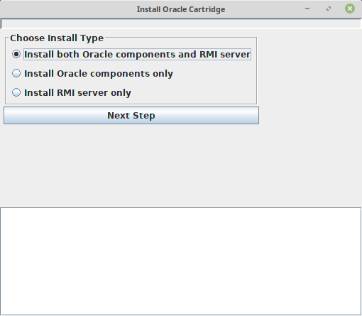
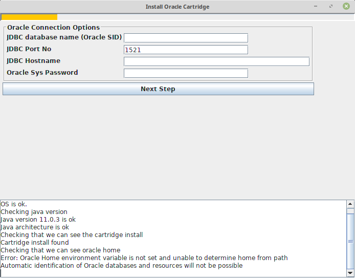
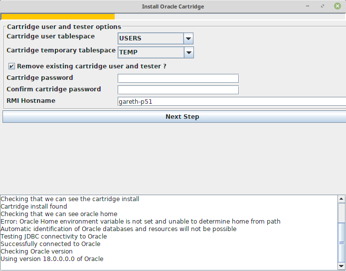
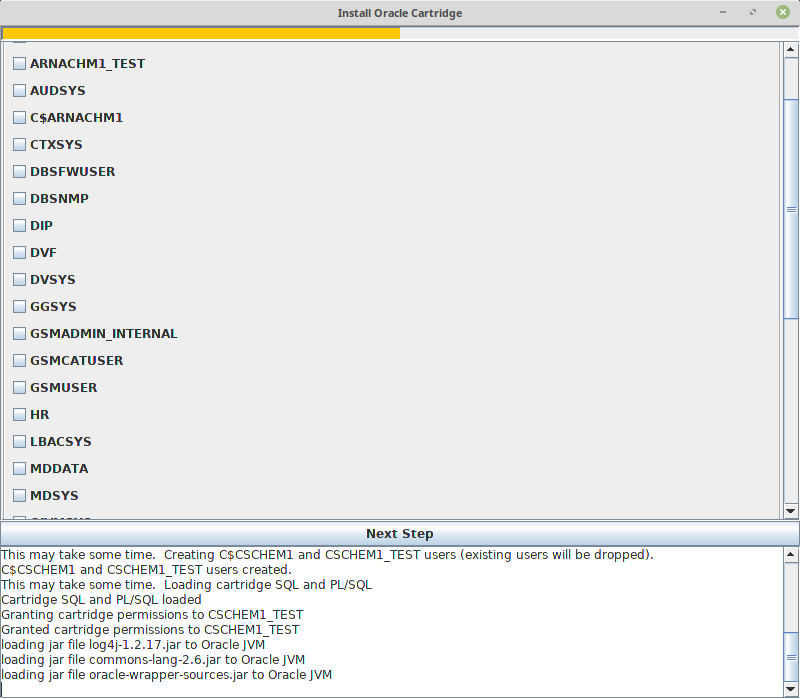
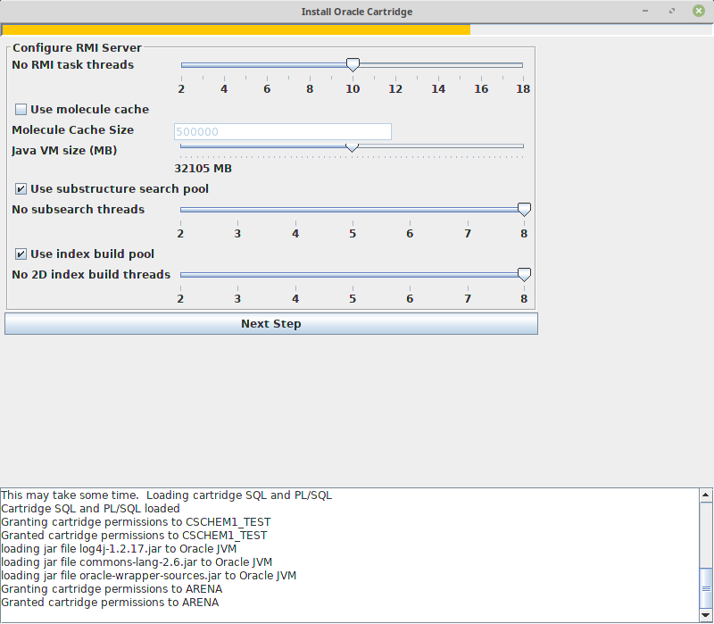
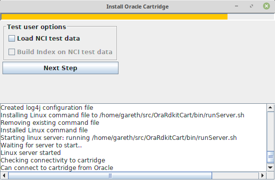
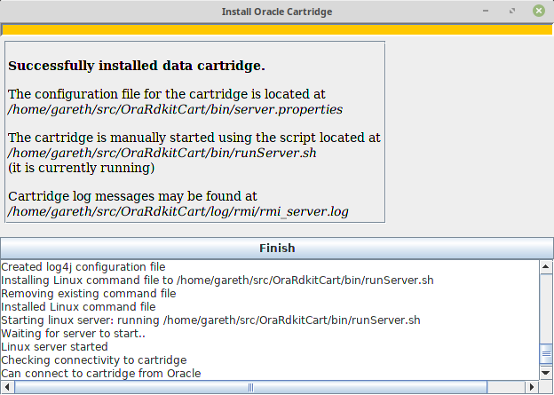

Installation¶
In accordance with Oracle naming conventions the cartridge is installed to the user C$CSCHEM1 (Cartridge-Cairn Scientific-Chemistry). This user is granted select on any table so that smiles columns in any table can be viewed. C$CSCHEM1 is also allowed to use Java to connect to any port. The change log tables and Java indexes are stored in this schema. The table JAVA_OBJECTS contains serialized Java objects; INDEX_LOOKUP maps index names to change log tables; STRUCTURE_SEARCH_LOG maintains search statistics and MESSAGE_TABLE logs RMI server log messages rated INFO or higher.
A number of PL/SQL data structures are also created. The most important of these include: CHEM_STRUCTURE, a package which contains a set of functions for manipulating structure types and Java wrappers; STRUCTURE_IND_OBJ, an object which implements the extensible index and INDEX_UTL, a package which provides common index functions. These steps are required to install the cartridge (assuming that Oracle is already installed).
- Create the cartridge owner C$CSCHEM1 and tester CSCHEM1_TEST
- Install SQL and PL/SQL components into Oracle
- Install RMI JAVA client classes to Oracle
- Configure and start RMI service
- Grant permissions to cartridge users.
Automated Install¶
A GUI is provided to facilitate the install process. The RMI server will be installed on the same machine that the installer is run. The Oracle database does not need to be on this machine, but if Oracle is on another machine TCP port access should be properly configured (see Prerequisites) You will need the following information before running the installer:
- Oracle SID. This is the unique per-machine identifier of an Oracle database and is used by JDBC drivers to connect to Oracle.
- Oracle SYS Password.
- Any existing users who you wish to grant cartridge access to.
- An idea of how much maximum memory you wish to assign to Java and whether or not to cache Openeye molecules.
The installer logs messages in the directory log/install/<install date>. Check this directory and the application console if the install fails. Additionally, there are messages logged to the console and GUI.
To run the installer:
bin/install.sh
Choose Install Type¶
{kind=link}
Select “Install both Oracle components and RMI server”. The data cartridge also permits multiple RMI servers so that different indices can be hosted on different servers. These scenarios are not covered in this documentation.
Specify JDBC Connection Options¶
{kind=link}
On the next screen enter JDBC database name, hostname and port number together with the SYS password.
Selecting “Next Step” will test the connection and advance to the next screen.
Install Cartridge¶
{kind=link}
On the next screen you can select the tablespaces that the Cartridge user and tester will use. Note that the installer does not create new tablespaces: if you want to create custom tablespaces for these users you will need to do that prior to running the installer. You will need to specify a shared password for both users. If there is already a cartridge present it will have to be removed before you can proceed. If your are installing on the host running Oracle localhost can be used as the RMI hostname, otherwise you should use a network name that the Oracle instance will use to connect to the RMI server. 2ddThere are some cases where if you have more than one network card you may have to specify a particular hostname.
Grant Permissions¶
{kind=link}
On the next screen select which (if any) existing users will be allowed to use the data cartridge. Once the cartridge is installed you can use the SQL script sql/grant.sql to grant permissions to users post-installation as described later. The test user CSCHEM1_TEST us automatically granted permission to use the cartridge. Note that Oracle comes with a large number of built-in users.
Configure RMI Server¶
{kind=link}
For the penultimate step select the number of RMI threads, the maximum memory usage for the Java RMI process, whether to enable the cache of RDKit molecules and configure the substructure search and index build thread pools. It is safe to use accept the defaults on this screen. Once this screen is completed the RMI server will be started and the connection between the test user and data cartridge validated. The server configuration is stored in the file server.properties in the bin subdirectory. Messages from the cartridge are logged in the file log/rmi/rmi_server.log (relative to the cartridge root).
A shell script ,*runServer.sh* in the bin subdirectory, is provided to manually start the RMI cartridge. A companion script bin/stopServer will terminate a running server. Once you have installed the cartridge you might want to change the configuration settings by editing server.properties as described in below. In the configuration file you can arrange for indexes and the cache to be pre-loaded on startup. Whenever the configuration file is edited the Java RMI process must be restarted.
Load Test Data and Build Index¶
{kind=link}
In this final, optional, step you can load the test data into the cartridge tester’s (CSCHEM1_TEST) schema. This loads 260000 structure from the NCI open database into a table called nci_open. Following this you have the option to build a structure domain index on the table. Once you’ve done this you can run the commands in the manual using SQL*Plus when you’re connected as CSCHEM1_TEST. Once this step is complete, a final screen shows a summary of the install.
{kind=link}
Post Installation¶
Configuration File¶
Runtime settings are stored in bin/server.properties. The file is commented and enables configuration of the molecule cache and the various thread pools. The rmi server will need to be restarted for edits to take effect.
Grant Permissions¶
In order for users to create domain indexes and use cartridge features they need to be granted permission to execute an number of C$CSCHEM1 objects. Use the script sql/grant.sql to give permissions to cartridge users. You will need SQL*Plus to run the script. Note this script does not create new users, it grants permissions to existing users:
% cd sql
% sqlplus /nolog @grant.sql
SQL*Plus: Release 18.0.0.0.0 - Production on Sat Jun 1 17:23:11 2019
Version 18.3.0.0.0
Copyright (c) 1982, 2018, Oracle. All rights reserved.
SP2-0640: Not connected
Instance gjdev.cairn
C$CSCHEM1 password
User name query
Connected.
Call completed.
old 1: grant execute on chem_structure to &varUser
new 1: grant execute on chem_structure to query
Grant succeeded.